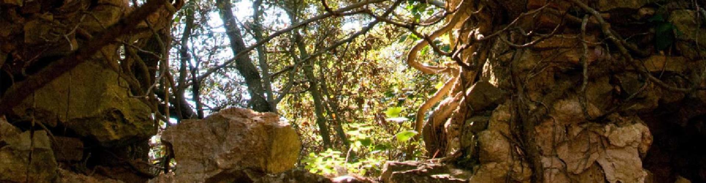

Ruta · Vallirana
Itinerari en el qual tindrem l'oportunitat de veure algunes construccions pròpies com els forns de calç , gaudir de vistes des de l' alt del Sotarro i conèixer algunes de les fonts de l'entorn.…